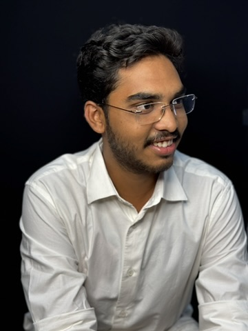

B.Tech student at Koneru Lakshmaiah Education Foundation (CGPA: 8.65/10.00). Specializing in RTL Design, ASIC & Verification, DSP, and Multi-Band Antenna Systems for autonomous vehicles.
Leading Student Branch operations, organizing technical workshops, and fostering undergraduate RF research initiatives at KL University.
Coordinating academic activities, student engagement events, and department-level initiatives across the ECE department.